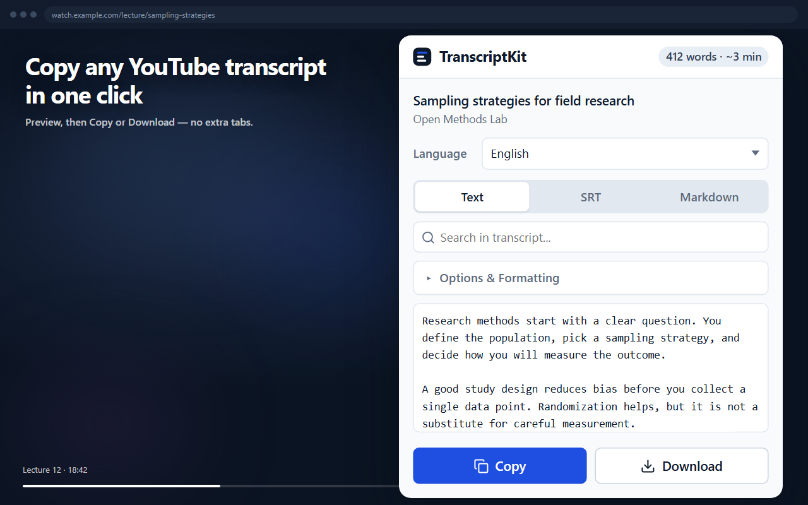

The fastest, cleanest extension to extract, search, and export YouTube transcripts. Export as clean Text, SubRip SRT subtitles, or Markdown with timestamps and chapters. Designed for students, researchers, creators, and note-takers.
Experience how clean and fast transcript formatting works before installing.
Toggle options in real-time to see how TranscriptKit cleans and organizes transcript data:
Everything you need to turn spoken videos into clean, actionable written knowledge.
Export as clean formatted plain text (.txt), subtitle files (.srt) ready for video editors, or GitHub-flavored Markdown (.md) with headers.
Find exact quotes, names, or topics in seconds with real-time keyword highlighting and instant match counts.
Jump straight to any point in the video. Click on any timestamp in the transcript to seek the player right to that moment.
If the creator marked chapters in the video, TranscriptKit automatically groups transcript lines under clear chapter titles.
Strips out annoying `[Music]`, `[Applause]`, and dedupes repeated auto-caption speech cues so your notes read like human prose.
No external servers. No telemetry. No analytics. Transcript extraction runs strictly in-memory inside your Chrome browser.
Designed to fit seamlessly into YouTube's interface without slowing down your browsing.

See why students and researchers choose TranscriptKit over generic alternatives.
| Feature | TranscriptKit | YouTube Native Panel | Third-Party Web Scrapers |
|---|---|---|---|
| Cost | 100% Free Forever | Free | Freemium / Paywalls |
| 1-Click Copy | Yes (or Alt+Shift+C) | Manual select all & copy | Paste link into external site |
| Export Formats | Text, SRT Subtitles, Markdown | Raw unformatted text only | Mostly plain text |
| In-Transcript Search | Built-in with match counter | Basic search | None |
| Noise & Filler Removal | Automatically strips [Music] | Kept in text | Kept in text |
| Auto-Caption Deduplication | Clean sliding-window dedupe | Overlapping repetitive text | Overlapping repetitive text |
| Privacy & Telemetry | Zero data collection | Logged by Google | Ads, trackers, cookies |
No complicated configuration. Ready to use in less than 30 seconds.
Click "Add to Chrome". No sign-up, credit card, or account registration needed.
Works on standard videos, YouTube Shorts, and premiere recordings with closed captions.
Click the extension icon, use the on-page "Transcript" button, or press Alt+Shift+C to copy instantly.
Everything you need to know about TranscriptKit.
Alt+Shift+C. You can customize it at any time by navigating to chrome://extensions/shortcuts in your Chrome browser.
video.currentTime to that exact moment.